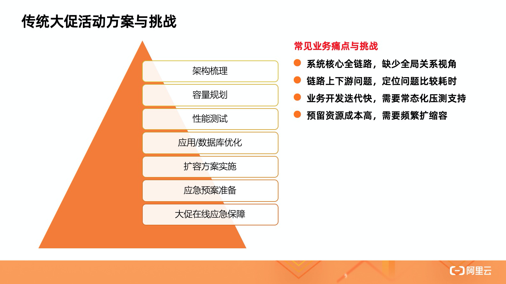
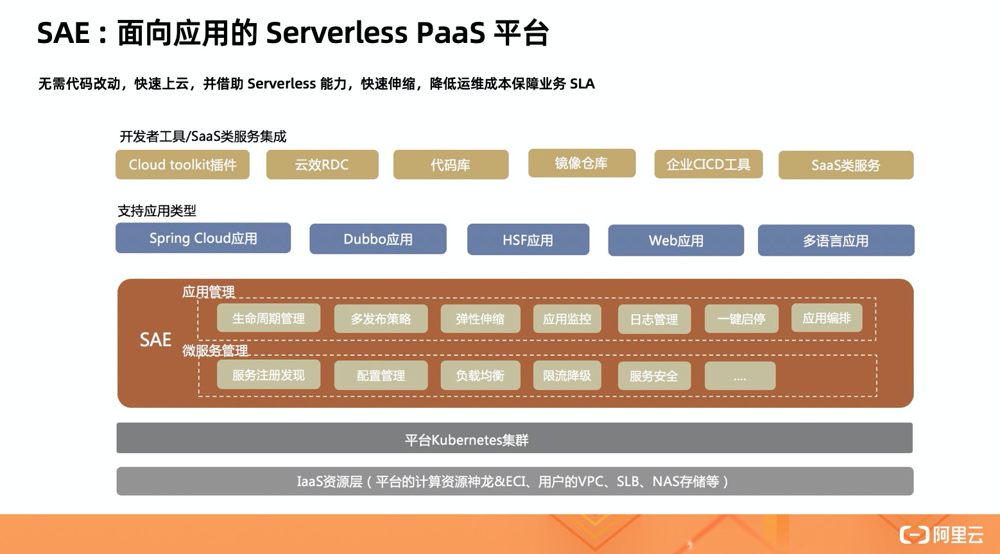
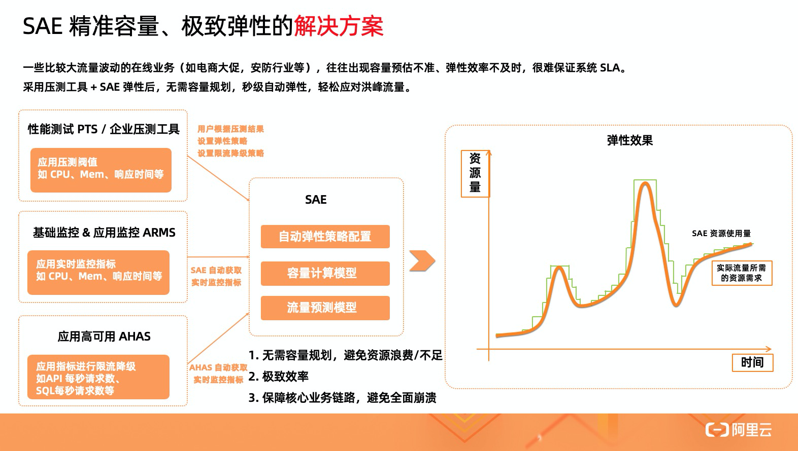
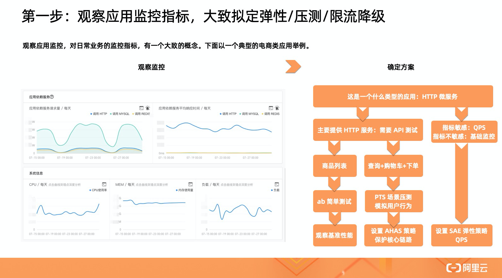
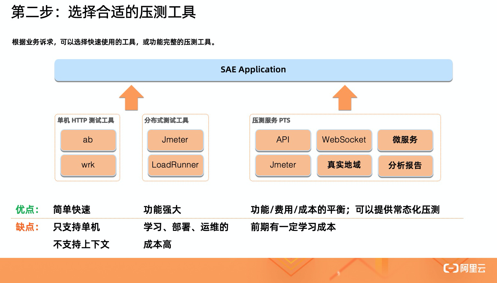
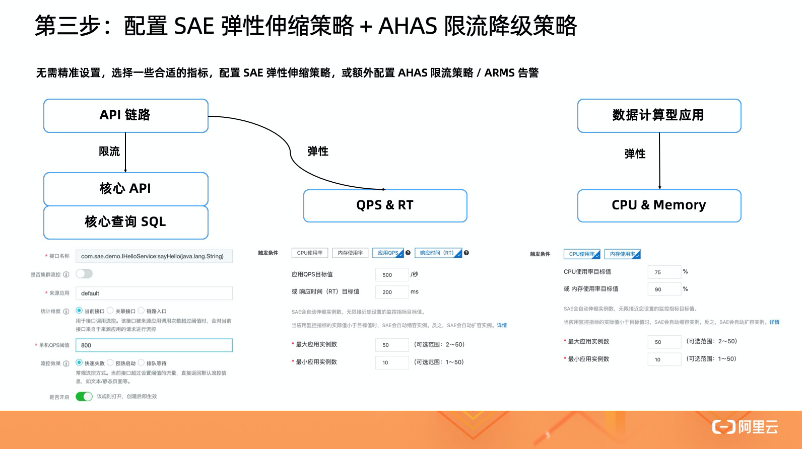
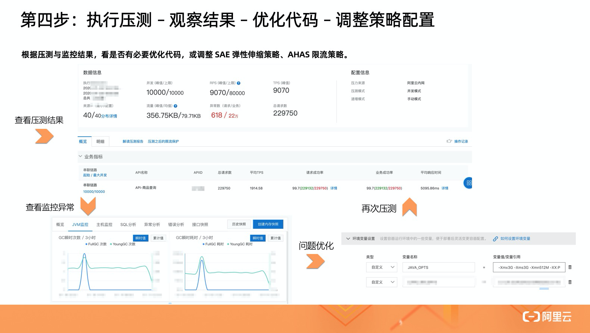

- 01 架构的演进.md
- 02 Serverless 的价值.md
- 03 常见 Serverless 架构模式.md
- 04 Serverless 技术选型.md
- 05 函数计算简介.md
- 06 函数计算是如何工作的？.md
- 07 函数粘合云服务提供端到端解决方案.md
- 08 函数计算的开发与配置.md
- 09 函数的调试与部署.md
- 10 自动化 CI&CD 与灰度发布.md
- 11 函数计算的可观测性.md
- 12 典型案例 1：函数计算在音视频场景实践.md
- 13 典型案例 3：十分钟搭建弹性可扩展的 Web API.md
- 14 Serverless Kubernetes 容器服务介绍.md
- 15 Serverless Kubernetes 应用部署及扩缩容.md
- 16 使用 Spot 低成本运行 Job 任务.md
- 17 低成本运行 Spark 数据计算.md
- 18 GPU 机器学习开箱即用.md
- 19 基于 Knative 低成本部署在线应用，灵活自动伸缩.md
- 20 快速构建 JenkinsGitlab 持续集成环境.md
- 21 在线应用的 Serverless 实践.md
- 22 通过 IDEMaven 部署 Serverless 应用实践.md
- 23 企业级 CICD 工具部署 Serverless 应用的落地实践.md
- 24 Serverless 应用如何管理日志&持久化数据.md
- 25 Serverless 应用引擎产品的流量负载均衡和路由策略配置实践.md
- 26 Spring CloudDubbo 应用无缝迁移到 Serverless 架构.md
- 27 SAE 应用分批发布与无损下线的最佳实践.md
- 28 如何通过压测工具+ SAE 弹性能力轻松应对大促.md
- 29 SAE 极致应用部署效率.md
因收到Google相关通知，网站将会择期关闭。相关通知内容
28 如何通过压测工具+ SAE 弹性能力轻松应对大促
传统大促挑战

一次常见的大促活动，技术人员通常会从下面几个方面着手，进行准备工作：
- 架构梳理：对参与大促的服务，进行系统性的架构梳理；
- 容量规划：结合架构梳理，确定系统 SLA 指标，形成容量模型，帮助业务进行评估；
- 性能测试：核心系统的单机容量评估，与核心链路全链路压测，可以验证容量模型，发现系统存在的问题；
- 应用/数据库优化：对发现的系统问题，譬如热点、死锁或慢 SQL 等，进行优化，确保系统可以支撑大促；
- 准备扩容方案：通过容量规划与性能测试，可以确定一套满足活动需求的扩容方案，既保障业务，又降低成本；
- 应急预案准备：当遇到突发情况如何应对，譬如业务降级，砍掉非核心逻辑，或者限流降级，保障核心链路稳定；
- 大促在线应急保障：专人专项，对问题进行响应，执行应急预案。
要完成上述准备工作，经常会遇到如下痛点：
- 系统核心全链路，缺少全局关系视角。需要花大量时间，整理依赖关系。
- 链路上下游问题、定位问题比较耗时。压测与在线应急保障过程中，汇总链路上下游问题，定位问题比较耗时，缺少快速定位分析工具。
- 业务开发迭代快，需要常态化压测支持。大量重复性人力投入，给大家造成很大负担。
- 预留资源成本高，需要频繁扩缩容。需要产品化支持自动弹性伸缩，降低自建机房等高成本高闲置的固定投入。
SAE 大促解决方案

首先，SAE 是一款面向应用的 Serverless PaaS 平台，在传统 PaaS 功能之外，提供了完备的全链路监控、微服务管理等能力，并借助 Serverless 能力，最大程度进行快速扩缩容、降低手工运维成本。

SAE 提供的解决方案，将从三方面入手：
- 指标可视化：借助应用监控 ARMS 提供丰富的 JVM、全链路 Tracing 、慢 SQL 等功能，便捷地评估水位、定位问题；
- 应用高可用：借助 AHAS 限流降级能力，流量激增时，保护核心服务，保障可用性不完全跌 0；
- 性能压测：借助压测工具如 PTS，模拟单机压测或全链路压测，验证容量规划、发现应用问题。
快速压测验证
那么如何通过 SAE ，进行一次快速的大促压测验证呢？下面将进行一次完整的展示：
第一步：观察应用监控指标，大致拟定弹性/压测/限流降级

通过观察应用监控，对日常业务的监控指标，有一个大致的概念。以一个典型的电商类应用为例。
从监控情况看：
- 该应用为 HTTP 微服务应用；
- 应用依赖大量 HTTP 微服务调用，少量使用 Redis / MySQL 服务，适合使用单机 + 分布式压测工具，分别进行压测；
- QPS 指标，相比 CPU、MEM 和 RT 指标，对业务更敏感，更适合作为弹性策略指标。
第二步：选择合适的压测工具

根据业务诉求，可以选择快速使用的工具，或功能完整的压测工具。
- 譬如单机 HTTP 压测工具 ab、wrk，可以提供简单快速的压测方式，但只支持单机、不支持上下文。
- 如果我们需要支持 WebSocket 、常态化压测，云产品 PTS 可以提供较为完整的服务，相比自建成本更低。
第三步：配置 SAE 弹性伸缩策略 + AHAS 限流降级策略

无需精准设置，选择一些合适的指标，配置 SAE 弹性伸缩策略，或额外配置 AHAS 限流策略 / ARMS 告警。
- 对 API 类型，可通过对 API QPS、SQL QPS 等指标进行限流，保障超过系统水位的请求，快速 failover，降低对容量内业务的 SLA；并选择应用监控指标 QPS、RT，配置弹性规则，让系统进行弹性伸缩；
- 对于计算型应用，则可选择更敏感的指标，如 CPU、Memory 对应用进行扩缩容。
第四步：执行压测 – 观察结果 – 优化代码 – 调整策略配置

1）根据压测与监控结果，看是否有必要优化代码，或调整 SAE 弹性伸缩策略、AHAS 限流策略。 2）执行压测，查看压测结果，发现存在失败请求。 3）查看监控异常，发现存在 GC 异常。通过 SAE 控制台，优化 JVM 参数解决。 4）再次压测，验证问题是否解决。 5）如此重复一两轮，解决其中发现的主要问题，可以更从容地面对大促。
详细演示过程请点击【视频课链接】进行观看。
© 2019 - 2023 Liangliang Lee. Powered by gin and hexo-theme-book.